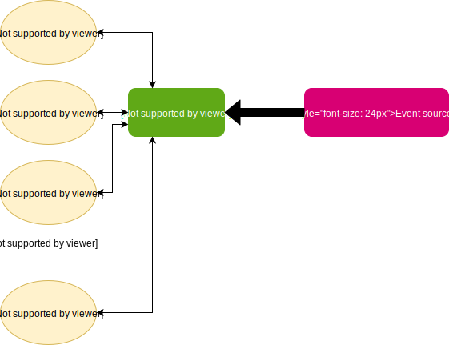

class: center, middle <img src="https://monix.io/public/images/monix-logo.png" width="100" /> # Monix in practice ### Ilya Murzinov [https://twitter.com/ilyamurzinov](https://twitter.com/ilyamurzinov) [https://github.com/ilya-murzinov](https://github.com/ilya-murzinov) Slides: [https://ilya-murzinov.github.io/slides/scalaspb2018](https://ilya-murzinov.github.io/slides/scalaspb2018.pdf) ??? Всем привет, меня зовут Илья, я бэкенд-разработчик в компании Револют. Я хочу рассказать про библиотеку Моникс для функционального и реактивного программирования. В конце доклада за лучшие вопросы я подарю вот такую классную толстовку. --- layout: true <div class="my-footer"><span>Monix in practice - Ilya Murzinov, slides: <a href="https://ilya-murzinov.github.io/slides/scalaspb2018.pdf">https://ilya-murzinov.github.io/slides/scalaspb2018.pdf</a></span></div> --- class: middle, center <img src="../../../images/Revolut.png" style="max-width:100%;" /> ??? Но для начала пара слов про Револют: мы - финтех-стартап с головным офисом в Лондоне, а так же офисами разработки в Питере, Москве и Кракове. Мы делаем цифровой банк, в котором счёт можно открыть за минуты, курсы валют всегда самые выгодные, а международные переводы вообще бесплатные. Проекты у нас в основном написаны на джаве, но есть несколько проектов на скале, одним из которых мне посчастливилось заниматься. Это проект "чат" - АПИшка для общения между саппорт-агентами и юзерами. Я говорю "посчастливилось", потому что это, наверное, пока единственный наш проект, написанный в чисто функциональном стиле, который лично мне очень близок. И, конечно, у нас используется Моникс, иначе бы я тут не стоял. А поднимите, пожалуйста, руку те, кто пишет (старается писать) в функциональном стиле? А кто вообще знает, что такое чисто функциональный стиль? Я для себя определил функциональный стиль как отсутствие функций с сайд-эффектами. Функции без сайд-эффектов ещё называют ссылочно прозрачными. Ссылочно прозрачная функция - это такая функция, вызов которой можно заменить на результат её выполнения без изменения семантики программы. --- # Referential transparency ```scala def goodFunction() = 2 + 2 ``` ??? Например, в ЭТОМ ПРИМЕРЕ goodFunction - ссылочно прозрачная, она всегда возвращает 4, и любой её вызов можно заменить просто на 4. А вот с badFunction такой фокус не пройдёт, несмотря на то, что она тоже всегда возвращает 4, потому что кроме этого она ещё посылает куда-то какое-то сообщение. Этот пример, конечено, утрированный, но мысль ясна. -- ```scala def badFunction() = { sendMessage() 2 + 2 } ``` ??? Функциональный стиль написания кода даёт много преимуществ, главным из которых для меня, как для разработчика, является возможность не думать про контекст выполнения функции а так же возможность рефакторить код не опасаясь, что я что-то сломаю. Давайте перейдём непосредственно к обзору Моникса и посмотрим какие абстракции он предлагает и как с ними работать. --- class: middle, center <img src="https://monix.io/public/images/monix-logo.png" width="100" /> # Monix ??? Как я уже сказал, Моникс - это библиотека для функционального и реактивного программирования. Но на самом деле это аж 4 небольшие библиотечки, у каждой из которых своя функция. Это полезно, чтобы добавлять в проект только те зависимости, которые необходимы. Пройдёмся по каждой библиотечке и посмотрим, что она содержит. --- # Monix modules - `monix-eval` - Task, Coeval, MVar etc. - `monix-reactive` - Observable, Observer (push-based streaming) - `monix-tail` - Iterant (pull-based streaming) - `monix-execution` - Scheduler & bunch of performance hacks ??? monix-eval - основная библиотека для описания вычислений. Предоставляет такие абстракции как Task, Coeval, MVar monix-reactive - Observable, Observer (push-based stream) monix-tail - Iterant (pull-based stream) monix-execution - содержит Scheduler и кучу классов внутреннего АПИ (например свои атомики). Предназначен для выполнения описанных вычислений. От этого модуля зависят все остальные. Сорцы этого модуля очень интересно читать, можно много подсмотреть про перформанс оптимизации. --- class: middle, center # `Task[A]` ??? Ключевой абстракцией является Task - структура данных, которая позволяет описывать вычисления, возможно, асинхронные. Для начала хочу пояснить, зачем вообще нужен Task, когда у нас вроде бы уже есть Future, которая позволяет описывать асинхронные вычисления. Дело в том, что между Task и Future есть значительные принципиальне различия, давайте на них посмотрим. --- # Task vs Future -- `scala.concurrect.Future`: - Eager (thus not ref. transparent) ??? Главная проблема Future в том, что она жадная, это значит, что когда вы в своём коде получили ссылку на какую-то Future, то скорее всего она уже начала выполняться, а может быть даже завершила выполнение. Это нарушает ссылочную прозрачность Future, то есть банальный рефакторинг ТАКОГО ВИДА полностью меняет семантику программы. -- - Not cancellable ??? Кроме того, запущенное внутри Future вычисление невозможно отменить, даже если результат нам уже не нужен. То есть отменить-то его можно, но для этого придётся делать кастомную логику в самом вычислении. -- - Always asyncronous ??? С точки зрения выполнения, Future всегда запускается на другом логическом потоке, что может привести к оверхеду из-за переключения контекста, хотя в некоторых случаях этого можно было бы избежать. -- `monix.Task`: - Lazy (ref. transparent) ??? С другой стороны Task является ленивым, то есть пока на нём не вызван runAsync, ничего не будет выполнено. На таск можно смотреть как на чистую функцию, которая возвращает Future. Это делает его ссылочно прозрачным, а значит программу, составленную из тасков, гораздо проще поддерживать. -- - Cancellable ??? Таск можно сделать отменяемым, причём почти автоматически, просто вызвав cancelable. Чуть позже я поясню, как это работает. -- - Not always asyncronous ??? Таск не всегда запускается на другом логическом потоке и позволяет очень точно контролировать своё выполнение, например, выполнять часть задач на отдельном тред-пуле, либо форсировать переключение на другой логический поток. Хочу перейти к примерам, но придётся сначала поговорить про Scheduler, потому что без него таск не запустить. Scheduler - это ExecutionContext с дополнительными возможностями. --- # Scheduler - Schedule delayed execution - Schedule periodic execution - Provide cancellation token - Use different execution models ??? Scheduler - это ExecutionContext с дополнительными возможностями. Он умеет: - Запускать отложенную задачу - Запускать задачу периодически - Предоставлять текущее время - Предоставлять cancellation token для отмены запланированной задачи - Использовать разные модели выполнения С первыми 4 пунктами всё должно быть понятно, про последний поясню. --- # ExecutionModel - `AlwaysAsyncExecution` - `SynchronousExecution` - `BatchedExecution` ??? В Моникс существуют 3 модели выполнения задач - AlwaysAsyncExecution, SynchronousExecution и BatchedExecution. AlwaysAsyncExecution - модель выполнения, которая соответстует аналогична Future, то есть всегда форкает тред. SynchronousExecution - всегда запускает таски на том же потоке, если явно не указано обратное. По дефолту используется последняя модель выполнения, то есть BatchedExecution, которая запускает таски на одном потоке батчами определённого размера, после чего шифтится на другой поток. Вернёмся к скедулеру и посмотрим, какие они бывают и для чего. --- # Scheduler ??? computation под капотом имеет ForkJoinPool и предназначен в основном для CPU-bound вычислений. у io под капотом unbounded CachedThreadPool. Давайте наконец-то посмотрим, как создавать таск. После всего, что я рассказал, это должно быть совсем понятно. -- - `Scheduler.computation(name = "my-computation")` -- - `Scheduler.io(name = "my-io")` -- --- # Creating a task ```scala import monix.eval.Task // eagerly evaluates the argument Task.now(42) Task.now(println(42)) // suspends argument evaluation Task.eval(println(42)) // suspends evaluation + makes it asyncronous Task.eval(println(42)).executeAsync Task(println(42)) // suspends effects of creating another Task Task.defer(createSomeTask()) ``` ??? executeAsync форсирует асинхронное выполнение таска, он неявно принимает в качестве аргумента Scheduler, позволяя запустить таск на другом тред-пуле. --- # Thread shifting ```scala import monix.execution.Scheduler import monix.execution.Scheduler.Implicits.global lazy val io = Scheduler.io(name = "my-io") val source = Task.eval(println( s"Running on thread: ${Thread.currentThread.getName}")) val async = source.`executeAsync` val forked = source.`executeOn(io)` val onFinish = Task.eval(println( s"Ends on thread: ${Thread.currentThread.getName}")) source // executes on main .flatMap(_ => source) // executes on main .flatMap(_ => async) // executes on global .flatMap(_ => forked) // executes on io .`asyncBoundary` // switch back to global .doOnFinish(_ => onFinish) // executes on global .runAsync ``` --- # Composing tasks ```scala val extract: Task[Seq[String]] = ??? val transform: Seq[String] => Task[Seq[WTF]] = ??? val load: Seq[WTF] => Task[Unit] = ??? for { strings <- extract transformed <- transform(strings) _ <- load(transformed) } yield () ``` -- ```scala val extract1: Task[Seq[String]] = ??? val extract2: Task[Seq[String]] = ??? val extract3: Task[Seq[String]] = ??? val extract = Task.parMap3(extract1, extract2, extract3)(_ :+ _ :+ _) ``` -- --- # Composing tasks ```scala val tasks: Seq[Task[A]] = Seq(task1, task2, ...) // Seq[Task[A]] => Task[Seq[A]] Task.sequence(tasks) Task.gather(tasks) Task.gatherUnordered(tasks) ``` -- ```scala // Seq[Task[A]] => Task[A] Task.raceMany(tasks) ``` --- # Task cancellation --- # Example  --- # Example ```scala def clientSubscriber(clients: MVar[Clients]) = Observable.repeat(()) .doOnSubscribe(() => println(s"Client subscriber started")) .mapTask(_ => acceptClient) .mapTask { case (id, s) => for { map <- clients.take _ <- clients.put(map + (id -> s)) } yield () } .completedL ``` --- # Example ```scala def eventSourceProcessor(clients: MVar[Clients]) = Observable.repeat(()) .doOnSubscribe(() => println(s"Event processor started")) .mapTask(_ => acceptEventSource) .flatMap(it => Observable.fromIterator(it) .map(parse) .scanTask(Task.pure(initialState)) { case (state, event) => for { map <- clients.take state <- handler.handle(event, state, map) _ <- clients.put(map) } yield state }) .completedL ``` --- # Example ```scala for { clients <- MVar(Map[ClientId, Socket]()) c = clientSubscriber(clients).executeOn(clientScheduler) e = eventSourceProcessor(clients).executeOn(eventSourceScheduler) _ <- Task.gatherUnordered(Seq(c, e)) } yield () ``` --- # References - [Monix (https://monix.io)](https://monix.io) - [Monix vs Cats-Effect](https://monix.io/blog/2018/03/20/monix-vs-cats-effect.html) - [Scalaz 8 IO vs Akka (typed) actors vs Monix @ SoftwareMill](https://blog.softwaremill.com/scalaz-8-io-vs-akka-typed-actors-vs-monix-part-1-5672657169e1) --- class: center, middle # Questions? --- class: center, middle # Thanks!